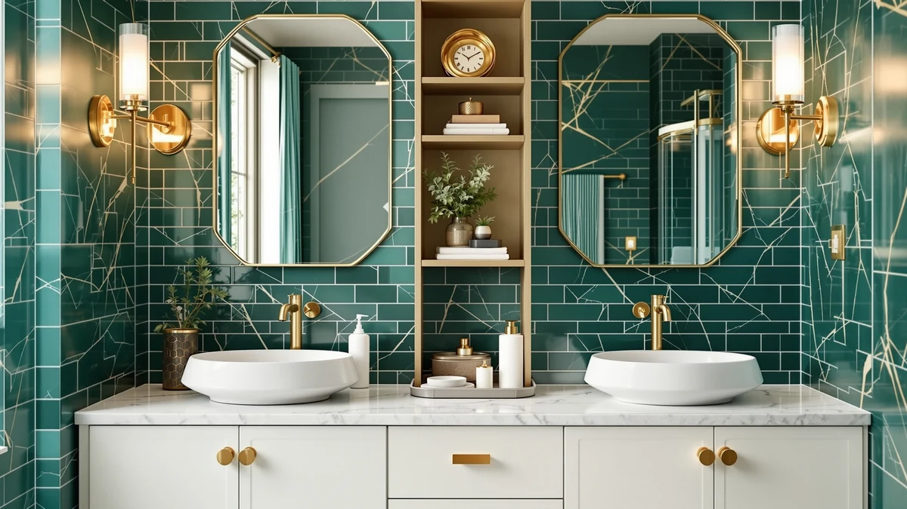

The Best Small-bathroom Under-sink Organizers (2026)
Prices and picks verified as of August 2026. Independent, reader-supported reviews.


Quick Answer
For most small bathrooms, the Aekenr Under Sink Organizer is our pick among the best small-bathroom under-sink organizers, because its two-pack, three-tier layout splits neatly around a center pipe and offers more configurable shelving than anything else at this price. At $36.69 it costs less than most of the competition here. If your plumbing runs off to one side instead of straight down the middle, the REALINN L-Shaped organizer is the better match.
Our pick: Aekenr Under Sink Organizer and, $36.69 Check Price on Amazon
Bottom line: our top pick is the Aekenr Under Sink Organizer and Storage for Bathroom and at $36.69. The best budget option is the Simple Trending Under Sink Organizer 2 Pack at $17.99.
Things to Know Before You Buy
- Measure first. Measure the width between the cabinet walls and the depth to the back wall before buying a small-bathroom under-sink organizer. Most are metal-and-wood builds that don't flex, so a rack that's an inch too wide simply won't fit around the pipes.
- Pull-out designs help in tight cabinets. A slide-out organizer gives you full access to items at the back without unloading the front row first, which matters most when you're crouching in a small bathroom to reach anything.
- Multi-tier shelving keeps categories separate. Splitting storage across tiers, cleaning supplies on one, toiletries and paper goods on another, stops you from digging through one pile every time you need something specific.
- Two-packs work around a center pipe. Two narrower units placed on either side of the plumbing usually fit better than one wide organizer trying to straddle it.
- Material matters more than it looks. Metal-and-wood construction resists the moisture that warps cardboard organizers or cracks thin plastic within a year under a sink.
Finding the best small-bathroom under-sink organizers means solving a puzzle most manufacturers ignore: pipes, U-bends, and shutoff valves eat into cabinet space long before you get to store anything. A powder room cabinet often measures under two feet wide, and half of that is blocked by plumbing. We compared seven organizers built to work around that obstacle, from adjustable metal-and-wood shelves to pull-out drawers that slide clear of the pipes entirely.
Our top pick, the Aekenr Under Sink Organizer, earned that spot because its two-pack, three-tier layout adapts to almost any cabinet width and splits storage into distinct zones for cleaning supplies, toiletries, and backup rolls. At $36.69, it costs less than several competitors while offering more configurable shelving. If your cabinet has an unusual L-shaped footprint around the pipe, the REALINN L-Shaped organizer is worth the extra few dollars. If you need something functional under $20, the Simple Trending rack does the job without extra features.
We researched each organizer's construction, its dimensions relative to typical cabinet openings, and verified buyer feedback rather than relying on manufacturer marketing copy. Buyers who reviewed these organizers report that powder-coated metal and wood hold up better in damp cabinets than plastic-only designs, which shaped how we weighed materials throughout this guide. For most cabinets, the Aekenr remains our top pick among the best small-bathroom under-sink organizers, with the REALINN and Simple Trending organizers as the strongest alternatives.
Why You Should Trust Us
Ilane Tall covers bathroom storage and small-space organization for Best Bathroom Storage, and this guide to the best small-bathroom under-sink organizers follows the same research standard applied across the site: we compare specs, pricing, and verified owner reviews rather than reprint the seller's own listing copy. We do not run a fake testing lab or claim hands-on time with every organizer here.
Instead, we cross-reference manufacturer dimensions against typical under-sink cabinet sizes and read through verified buyer feedback to flag recurring complaints about durability, fit, and hardware quality before a product earns a place in this roundup.
How We Picked
We started by pulling every under-sink organizer built for small bathrooms and narrowing the list to models under 24 inches wide, since that's the realistic ceiling for a typical powder room vanity. From there, we prioritized organizers with configurable or multi-tier shelving over single-shelf racks, because split storage does more work in a cramped cabinet.
We also weighed material: metal-and-wood builds beat plastic-only organizers on our list, since reviewers report longer lifespans in humid conditions. Price mattered too. We included at least one option under $20 and one upgrade pick, so the best small-bathroom under-sink organizers on this list span a real budget range instead of clustering at one price point.
How We Compared
We compared these seven small-bathroom under-sink organizers on four factors: footprint versus typical cabinet dimensions, shelf configurability around plumbing, material durability based on verified owner reports, and price relative to features. We did not physically install or use these products ourselves.
Instead, we analysed manufacturer specifications, cross-checked listed dimensions against common under-sink cabinet sizes, and read through verified buyer reviews to identify patterns in complaints about wobble, rust, or hardware failure. When multiple reviewers flagged the same issue, such as a shelf that doesn't lock securely, we noted it as a con rather than treating a single complaint as representative.
Our Picks

Aekenr Under Sink Organizer and
What we like
- Two three-tier units let you split storage across both sides of a center pipe
- Metal-and-wood construction holds up better than plastic-only racks in a damp cabinet
- Adjustable tiers accommodate taller bottles without wasting headroom on shorter items
Flaws but not dealbreakers
- Assembly means attaching multiple shelf brackets, which takes longer than a one-piece rack
- Each unit's narrower footprint means large items like paper towel multipacks still need floor space
| Material | Metal / wood |
| Size | 2 Pack 3 Tier |
The Aekenr is our top pick because it solves the two most common under-sink complaints at once: cramped width and mismatched shelf heights. Instead of one wide unit that has to squeeze around the drainpipe, it ships as two separate three-tier racks you can place on either side of the plumbing, cleaning sprays on one, toiletries and backup supplies on the other. Buyers mention that the adjustable tiers let taller items like dish soap refills or shampoo bottles sit upright instead of getting laid on their side to fit.
At $36.69 for two full units, it undercuts several single-rack competitors on this list while offering more usable shelving overall. The metal-and-wood build is a meaningful upgrade over the all-plastic organizers we researched for this guide, since plastic tends to warp or crack near a cabinet's humidity over time, according to buyer feedback we reviewed. Assembly is the tradeoff. Each unit has multiple shelf brackets, so setup takes longer than snapping together a single pre-formed rack, and a few reviewers mention checking that shelves sit level before loading them with heavier bottles.

REALINN Under Sink Organizer L-Shaped
What we like
- The L-shaped frame follows a corner pipe instead of forcing you to work around it
- Two-pack lets you mirror the layout on both sides of an asymmetrical cabinet
- Metal-and-wood shelving matches the durability of our top pick
Flaws but not dealbreakers
- Less useful in a cabinet with a straight, centered pipe
- At $43.99, it costs more than most other options on this list
| Material | Metal / wood |
| Size | 2 Pack |
Not every under-sink cabinet has a pipe running straight down the middle. Plenty of small bathrooms route plumbing off to one side or around a corner, and that layout defeats most rectangular organizers before you even open the box. The REALINN L-Shaped organizer's frame bends to follow an offset pipe run instead of leaving an awkward gap, which is why it lands as our runner-up rather than the top pick. It's a more specific tool, built for the cabinets our top pick can't fully use.
Like the Aekenr, it ships as a two-pack and uses the same metal-and-wood shelving that reviewers report holds up well against cabinet moisture. Price is the main tradeoff. At $43.99 it costs about $7 more than our top pick for a similar amount of shelving, and that premium only pays off if your cabinet actually has the offset plumbing this shape is built for. If your pipe runs straight down the center, the L-shaped frame doesn't offer much advantage over a standard rectangular tier system.

Simple Trending Under Sink Organizer
What we like
- At $17.99, it's the least expensive organizer on this list by a wide margin
- Two-pack still gives you split storage without the price of a premium build
- Metal-and-wood construction, not the plastic you'd expect at this price
Flaws but not dealbreakers
- Fewer configuration options than the Aekenr or REALINN units
- Smaller overall footprint suits narrower cabinets better than deep ones
| Material | Metal / wood |
| Size | 2 pack |
The Simple Trending organizer is proof that a low price doesn't have to mean flimsy plastic. At $17.99, it costs less than half of our top pick, yet it still uses the same metal-and-wood shelving that reviewers credit with lasting longer than the all-plastic racks common at this price point. It ships as a two-pack, so you still get split storage on both sides of the plumbing, without the extra configurability that pushes the Aekenr and REALINN units higher in price.
This is the pick for buyers who want a functional, no-frills small-bathroom under-sink organizer and don't need adjustable tiers or a corner-hugging frame. Owners report that it fits smaller cabinets well, since the two units are narrower than the top pick's, though that also means it holds less overall if your bathroom cabinet is unusually deep. For a rental bathroom or a secondary bathroom where you're not investing heavily in storage, it covers the basics without the premium price tag.

REALINN Under Sink Organizer Pull
What we like
- Pull-out design slides forward so you can reach items at the back without removing everything in front
- Single unit keeps the price lower than the two-pack options on this list
- Metal-and-wood shelving matches the build quality of REALINN's L-Shaped model
Flaws but not dealbreakers
- One unit offers less total storage than the two-pack organizers
- Pull-out hardware adds a moving part that isn't present on fixed-shelf racks
| Material | Metal / wood |
| Size | 1 Pack |
Reaching into the back of a small bathroom cabinet usually means crouching, pulling out whatever's in front, and hoping you don't knock over a bottle of cleaner in the process. The REALINN Pull organizer slides the whole unit forward on a track, so the back row comes to you instead of the other way around. It's a single unit rather than a two-pack, which keeps the price at $28.99, our budget pick behind only the Simple Trending rack.
Because it's one unit, it holds less overall than the two-pack organizers higher on this list, and the sliding hardware is one more part that could eventually wear out compared with a fixed-shelf rack. Several reviewers say the slide mechanism works smoothly out of the box, though it's worth confirming your cabinet has enough side clearance for the unit to extend fully. For anyone who dreads bending over to dig through a static rack, the tradeoff in capacity is worth the added convenience.

Dolesman Under Sink Organizer 2
What we like
- Larger overall footprint than the budget options on this list, suited to bigger cabinets
- Metal-and-wood build consistent with the more durable organizers in this guide
- Adjustable layout works around a range of pipe positions
Flaws but not dealbreakers
- The larger footprint won't fit the narrowest small-bathroom cabinets
- At $39.99, it sits closer to our runner-up in price without the corner-specific shape
| Material | Metal / wood |
| Size | — |
The Dolesman organizer targets a slightly different cabinet than most of the picks above. Where the Simple Trending and REALINN Pull units are built for tight, narrow spaces, the Dolesman gives you more shelving to work with, which suits a bigger under-sink cabinet that still needs to clear a center or offset pipe. It uses the same metal-and-wood construction as our top picks, positioned as a middle-ground option between the compact budget racks and the specialized L-Shaped design.
At $39.99, it costs more than our top pick despite similar materials, so it makes the list mainly for cabinets where the narrower organizers leave wasted space. If your bathroom vanity is on the larger end for a small bathroom, meaning you have more than a foot and a half of usable width, the extra shelving pays off. If you're working with a cramped cabinet, the Simple Trending or Aekenr units make better use of limited space.

Under Sink Organizer 2-Pack Pull
What we like
- Combines the two-pack split storage of our top pick with the sliding access of the REALINN Pull
- Metal-and-wood shelving throughout, consistent with the more durable builds on this list
- Covers both sides of a center pipe with sliding drawers instead of fixed shelves
Flaws but not dealbreakers
- At $54.99, it's the second-most expensive organizer on this list
- Two sliding mechanisms mean two more moving parts than a fixed two-pack rack
| Material | Metal / wood |
| Size | 2-Pack |
This Kitstorack organizer pairs two features that usually come separately on this list: the split, two-pack layout of our top pick and the pull-out sliding access of the REALINN Pull unit. Instead of choosing between full-width shelving and easy access to the back of the cabinet, you get both sides sliding forward independently. That combination is why it earns a spot as an upgrade option for buyers who found the fixed two-tier racks awkward to reach into.
Cost is the tradeoff here. At $54.99, it's more expensive than every other organizer here except the Kitstorack two-tier below, and two sliding mechanisms introduce more hardware that could eventually need adjustment compared with a fixed rack. Reviewers researching pull-out organizers generally flag smooth-gliding tracks as the main thing to check before buying, since a track that binds partway defeats the point of the design. For a cabinet you access daily, the added cost buys real convenience.

Kitstorack Under Sink Organizer 2
What we like
- The most total shelving of any organizer on this list
- Two-pack format spreads that capacity across both sides of the cabinet
- Metal-and-wood construction built to the same standard as the rest of the Kitstorack lineup
Flaws but not dealbreakers
- At $63.99, it's the most expensive pick in this guide by a clear margin
- That much shelving only makes sense in a larger small-bathroom cabinet, not a cramped one
| Material | Metal / wood |
| Size | 2 Pack |
The Kitstorack two-tier organizer is the upgrade pick for buyers who have already outgrown the smaller racks on this list. It's built with the same metal-and-wood materials as the rest of the lineup, but in a larger two-pack format that maximizes total shelving. If you're storing supplies for more than one bathroom, or you keep a deep stock of cleaning products and backup toiletries, this is the organizer with room to hold all of it without stacking items on top of each other.
At $63.99, it's the priciest organizer we researched for this guide, nearly double our top pick, and that cost only makes sense if you'll actually use the extra capacity. Buyers should size their cabinet carefully before choosing this one, since the larger footprint that makes it useful for spacious cabinets will feel oversized in a small one. For the right cabinet, though, it offers more usable storage than anything else on this list.
Quick Comparison
| Product | Material | Price | Rating | Best for | Get it |
|---|---|---|---|---|---|
| Aekenr Under Sink Organizer and | Metal / wood | $36.69 | 4 | Splitting storage in a small-bathroom under-sink cabinet | View on Amazon → |
| REALINN Under Sink Organizer L-Shaped | Metal / wood | $43.99 | 4 | Cabinets with offset or corner plumbing | View on Amazon → |
| Simple Trending Under Sink Organizer | Metal / wood | $17.99 | 4 | Budget buyers who want the basics | View on Amazon → |
| REALINN Under Sink Organizer Pull | Metal / wood | $28.99 | 4 | Easy access without unloading the front row | View on Amazon → |
| Dolesman Under Sink Organizer 2 | Metal / wood | $39.99 | 4 | Larger cabinets with room to spare | View on Amazon → |
| Under Sink Organizer 2-Pack Pull | Metal / wood | $54.99 | 4 | Sliding access on both sides of the cabinet | View on Amazon → |
| Kitstorack Under Sink Organizer 2 | Metal / wood | $63.99 | 4 | Maximum storage capacity for larger cabinets | View on Amazon → |
What size under-sink organizer fits a small bathroom cabinet?
Measure the width between your cabinet's side walls and the depth to the back before buying, since most under-sink organizers use fixed metal-and-wood frames that won't flex to fit a tight opening.
Do metal under-sink organizers rust in a bathroom?
The organizers on this list use metal-and-wood construction rather than bare metal, which reviewers say holds up better against cabinet humidity than the all-plastic racks common at lower price points.
The Competition
We also researched other types of small-bathroom under-sink organizers that didn't make this list, and a few categories fell short for reasons worth naming.
All-plastic stacking bins. They were the cheapest option in every search, but reviewers report they crack or warp within a year in a damp cabinet, so we left them off this list in favor of the metal-and-wood builds above.
Over-the-door organizers. These came up often in searches for small-bathroom storage, but they only work if your cabinet door has room to swing without hitting the sink or a shower wall, which rules them out for a lot of powder rooms. We focused on floor-standing organizers instead, since they fit a wider range of cabinet layouts.
Single-shelf racks with no tier configuration. They're inexpensive, but reviewers point out that one flat shelf wastes the vertical space above it, exactly the space small-bathroom cabinets can't spare.
Frequently Asked Questions
What size under-sink organizer fits a small bathroom cabinet?
Measure the width between your cabinet's side walls and the depth to the back before buying, since most under-sink organizers use fixed metal-and-wood frames that won't flex to fit a tight opening. If your cabinet is narrow, a two-pack like our top pick, the Aekenr, lets you split storage into two smaller units instead of forcing one wide rack around the plumbing. For most small-bathroom cabinets, two units in the 8 to 10 inch width range clear the pipe on each side with room to spare.
Do metal under-sink organizers rust in a bathroom?
The organizers on this list use metal-and-wood construction rather than bare metal, which reviewers say holds up better against cabinet humidity than the all-plastic racks common at lower price points. We didn't find verified reports of rust across the organizers we researched for this guide, though any metal shelving benefits from occasional wiping if your cabinet tends to stay damp after showers.
How do I fit an organizer around bathroom pipes?
Start by noting where your pipe runs: straight down the center, or offset to one side or corner. A centered pipe usually works with a two-pack organizer like the Aekenr, split evenly on both sides. An offset or corner pipe calls for a shape built around that layout, like the REALINN L-Shaped organizer, which follows the bend instead of leaving a gap. If you need full access to items behind the pipe without unloading the front, a pull-out design such as the REALINN Pull organizer slides the whole unit forward on a track.